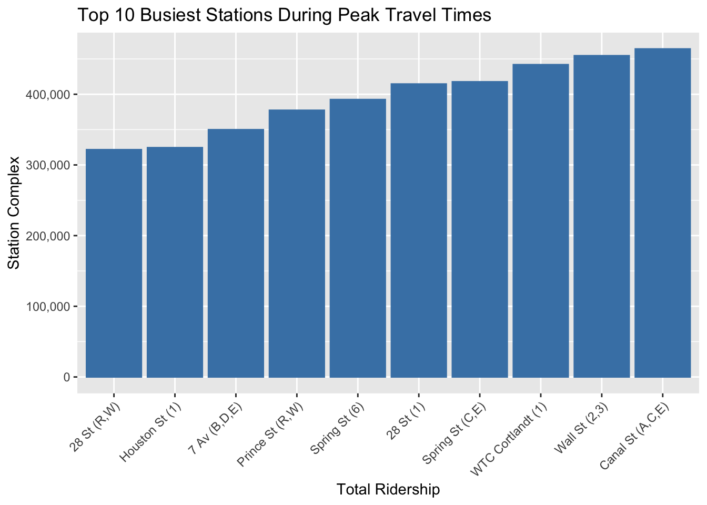
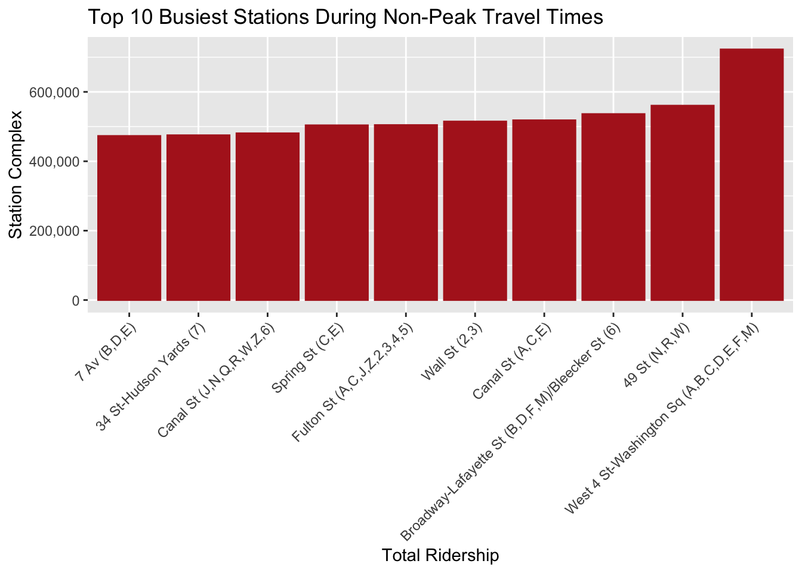

3.1 Transit Activity Analysis: Route Record Distributions Across Boroughs
Code
mtadata <-read.csv("mtadata.csv", header =TRUE, stringsAsFactors =FALSE)mtadata_separated <- mtadata %>%separate_rows(routes, sep =",")route_borough_count <- mtadata_separated %>%count(routes, borough) %>%arrange(borough, desc(n))ggplot(route_borough_count, aes(x =reorder(routes, n), y = n)) +geom_bar(stat ="identity", fill ="skyblue") +facet_wrap(~borough, scales ="free_x") +scale_x_discrete(breaks=function(x) x[seq(1, length(x), by=2)]) +# Show only every alternate labeltheme(axis.text.x =element_text(angle =90, hjust =1, vjust =0.5), strip.text.x =element_text(size =10)) +labs(title ="Number of Data Records per Route by Borough", x ="Route", y ="Number of Records") +scale_y_continuous(labels = scales::comma) # Use commas for large numbers
This graph displays the amount of data collected for different transit routes across the boroughs of New York City. Each subgraph represents a borough: Brooklyn (BK), Bronx (BX), Manhattan (M), Queens (Q), and Staten Island (SI). The vertical axis indicates the number of records, while the horizontal axis lists various transit routes.
From the data, the most striking finding is that there is a significant variation in the number of data records among routes within each borough, with Manhattan (M) showing a particularly steep increase in records for certain routes. This could imply higher ridership, more frequent services, or possibly more data collection points on these routes. Brooklyn (BK) and Queens (Q) also display a fair range of records across routes but do not reach the peaks seen in Manhattan. The Bronx (BX) shows less variation, indicating a more uniform level of data records across the routes. Staten Island (SI), on the other hand, has far fewer routes, and the data suggests a relatively lower level of records, which could reflect fewer services or a lower population using transit services.
3.2 Analyzing Public Transit: A Week in the Life of a City’s Boroughs
Code
mtadata <-read.csv("mtadata.csv", header =TRUE, stringsAsFactors =FALSE)mtadata %>%mutate(day_of_week =weekdays(as.Date(transit_timestamp, format ="%m/%d/%Y"))) %>%group_by(borough, day_of_week) %>%summarise(weekly_ridership =sum(ridership, na.rm =TRUE), .groups ='drop') %>%ggplot(aes(x = day_of_week, y = weekly_ridership, group = borough, color = borough)) +geom_line() +geom_point() +facet_wrap(~ borough) +scale_color_brewer(palette ="Set1") +# Add color using Color Brewer palettelabs(title ="Day of Week Ridership Patterns by Borough", x ="Day of the Week", y ="Total Ridership") +theme_minimal() +scale_y_continuous(labels =function(x) format(x, big.mark =",", scientific =FALSE)) +theme(axis.text.x =element_text(angle =45, vjust =1, hjust =1)) # Improve label readability
This graph shows the total number of people using public transportation across different boroughs of New York City on each day of the week. The data is plotted for Brooklyn (BK), Bronx (BX), Manhattan (M), Queens (Q), and Staten Island (SI), with each borough represented by a different color.
From this graph, we can observe that Manhattan (M) has the highest ridership, maintaining a consistent level throughout the week with a slight upward trend as the week progresses. Brooklyn (BK) and Queens (Q) follow a similar pattern, with steady ridership numbers that do not fluctuate much from day to day. The Bronx (BX) shows lower ridership compared to Brooklyn and Queens, but it follows the same trend of consistency across the week. Staten Island (SI) has the lowest ridership figures of all, indicating fewer people use public transportation there, or there may be fewer transportation options available.
This data suggests that public transportation is heavily utilized in Manhattan, possibly due to a high concentration of workplaces, attractions, and residential areas, necessitating daily travel. The consistency in ridership numbers across the week, including weekends, could imply that the city’s transit system is integral to the daily lives of its residents, not just for commuting but also for other activities.
3.3 Payment Preferences and Transit Usage Across City Boroughs
Code
mtadata %>%group_by(payment_method, borough) %>%summarise(method_ridership =sum(ridership, na.rm =TRUE), .groups ='drop') %>%ggplot(aes(x = payment_method, y = method_ridership, fill = payment_method)) +geom_bar(stat ="identity") +facet_wrap(~ borough) +# Faceting by boroughlabs(title ="Ridership by Payment Method and Borough", x ="Payment Method", y ="Total Ridership") +theme_minimal() +scale_y_log10() +theme(legend.position ="bottom") # Adjust legend position
Our plot presents a comparison of the total ridership based on two different payment methods—MetroCard and OMNY—across various boroughs of New York City: Brooklyn (BK), Bronx (BX), Manhattan (M), Queens (Q), and Staten Island (SI). The vertical axis is on a logarithmic scale, indicating a wide range of ridership numbers, which allows for the comparison of values that differ greatly in magnitude.
From the graph, it’s evident that the MetroCard is still a widely used payment method across all boroughs, showing a substantial number of riders using it. The OMNY system, which is a newer contactless payment option, also shows significant usage, with its adoption rate seemingly close to that of the MetroCard in certain boroughs like Manhattan and the Bronx. Notably, in Queens and Staten Island, MetroCard usage appears to be more prevalent than OMNY, which might indicate a slower transition to the newer technology or a preference for traditional payment methods in these areas.
This visualization provides insights into the adoption rates of different payment technologies across the city and can inform transit authorities about current trends in commuter payment preferences.
3.4 Dissecting Transit Patterns: A Route-by-Route Analysis of Borough Ridership
This displays a stacked bar chart, where each bar represents a New York City borough (Brooklyn - BK, Bronx - BX, Manhattan - M, and Queens - Q) and each color within the bars corresponds to a different transit route labeled A through Z and numbers 1 through 7. The vertical axis shows the average ridership, which quantifies the number of riders per route within each borough.
From this visual, we can infer several points. Manhattan (M) has the highest average ridership across the most transit routes, which could suggest that it is the most heavily trafficked borough in terms of public transportation, likely due to being a central business district with numerous attractions and residential areas. Brooklyn (BK) and Queens (Q) have a moderate level of average ridership, with a variety of routes used. The Bronx (BX) has the lowest average ridership among the four boroughs shown, with fewer routes represented.
This chart could indicate the distribution and utilization of transit services in each borough. For instance, the data might reflect that Manhattan’s transit system is extensively used across many routes, showing the borough’s reliance on public transportation. For Brooklyn and Queens, the diversity in route usage suggests a well-distributed transit network catering to various parts of the boroughs. The lower ridership in the Bronx could point to less frequent or less utilized transit services.
3.5 Strategic Insights: Comparing Station Popularity and Transit Demand
Code
mtadata_summary <- mtadata %>%group_by(station_complex) %>%summarise(average_daily_ridership =mean(ridership, na.rm =TRUE), .groups ='drop')# Finding top 10 and bottom 10 stationstop_10 <- mtadata_summary %>%top_n(10, average_daily_ridership)bottom_10 <- mtadata_summary %>%top_n(-10, average_daily_ridership)selected_stations <-bind_rows(top_10, bottom_10) %>%mutate(station_complex =factor(station_complex, levels =unique(station_complex)))ggplot(selected_stations, aes(x = station_complex, y = average_daily_ridership)) +geom_point() +coord_flip() +labs(title ="Top and Bottom 10 Stations by Average Daily Ridership",x ="Station",y ="Average Daily Ridership") +theme_minimal() +theme(axis.text.y =element_text(size =7), axis.title.y =element_text(size =10))
This graph displays a horizontal dot plot, where each dot represents a subway station in New York City. The stations are listed on the y-axis, and the x-axis indicates the average daily ridership. This type of plot is helpful to easily compare the ridership between stations at a glance.
From the graph, we can discern which stations have the highest and lowest average daily ridership. Stations like “West 4 St,” “Fulton St,” and “Broadway- Lafayette St” are among the busiest, with the highest number of average daily riders. These stations are likely to be major transit hubs or are located in densely populated areas or central business districts with high footfall. On the other end of the spectrum, stations like “Bay Pkwy,” “Alabama Av,” and “Broad Channel” have significantly lower ridership numbers, indicating they are less frequented by commuters, possibly due to their location in less busy areas or because they serve as local stops rather than major transfer points.
This information is particularly useful for city planners and transit authorities to identify where to focus resources and improvements. It can also inform potential infrastructure expansions or targeted marketing campaigns to increase ridership in less-utilized areas
3.6 Navigating Transit Trends: Seasonal Ridership Fluctuations Across Boroughs
Code
mtadata <-data.frame(transit_timestamp =rep(seq(as.POSIXct('2022-07-01'), as.POSIXct('2022-12-31'), by="month"), each=5),borough =rep(c("Manhattan", "Bronx", "Brooklyn", "Queens", "Staten Island"), times=6),ridership =sample(100:200, 30, replace =TRUE))p <- mtadata %>%mutate(month =floor_date(as.Date(transit_timestamp), "month"),borough =factor(borough) # Ensure borough is a factor ) %>%group_by(month, borough) %>%summarise(Total_Ridership =sum(ridership, na.rm =TRUE), .groups ='drop') %>%ggplot(aes(x = month, y = Total_Ridership, color = borough, group = borough)) +geom_line() +scale_color_viridis_d() +labs(title ="Total Ridership Over Time by Month and Borough", x ="Month", y ="Total Ridership")ggplotly(p)
This plot is a line chart that tracks the changes in public transportation ridership across the five boroughs of New York City (Bronx, Brooklyn, Manhattan, Queens, and Staten Island) over a six-month period. The y-axis indicates the total ridership, while the x-axis represents the time, marked from July to December.
The lines for each borough show fluctuations in ridership as the months progress. One notable trend is a peak or trough during certain months for different boroughs, which could correspond to seasonal events, changes in service levels, or other factors influencing how many people take public transport. For example, Brooklyn shows a significant rise in ridership in August, while the Bronx experiences a dip during the same period. Manhattan’s line appears to have a general downward trend as the year progresses, which might indicate a decrease in commuters or tourists during these months. Queens and Staten Island show less dramatic changes, but still display some variability.
This data can be valuable for transit planners to anticipate demand, adjust service, and plan for future infrastructure needs.
3.7 Hourly Transit Flow Throughout the Week
Code
mtadata1 <-read.csv("mtadata.csv", header =TRUE, stringsAsFactors =FALSE)mtadata1 %>%mutate(day_of_week =weekdays(as.Date(transit_timestamp, format ="%m/%d/%Y")),hour =format(as.POSIXct(transit_timestamp, format ="%m/%d/%Y %I:%M:%S %p"), "%H") ) %>%group_by(day_of_week, hour) %>%summarise(hourly_ridership =mean(ridership, na.rm =TRUE)) %>%ggplot(aes(x = hour, y = hourly_ridership, group = day_of_week, color = day_of_week)) +geom_bar(stat ="identity") +facet_wrap(~ day_of_week) +# Faceting by boroughscale_color_brewer(palette ="Set1") +# Add color using Color Brewer palettelabs(title ="Day of Week Ridership Patterns by Borough", x ="Day of the Week", y ="Total Ridership") +theme_minimal() +scale_x_discrete(breaks=function(x) x[seq(1, length(x), by=2)]) +theme(axis.text.x =element_text(angle =90, vjust =1, hjust =1))
`summarise()` has grouped output by 'day_of_week'. You can override using the
`.groups` argument.
The graph is a set of bar charts representing the total ridership for each day of the week, where each bar chart corresponds to a different day, from Sunday to Saturday. The y-axis indicates the total ridership, and the x-axis represents the hours of the day, likely in a 24-hour format. Different colors in the bar charts represent different boroughs of New York City.
Each bar chart shows the fluctuation in ridership at different times of the day for each borough, which can help identify peak and off-peak travel times. For instance, on Fridays (red bars), there seems to be a significant increase in ridership during certain hours, perhaps corresponding to the end of the workweek when people may go out more. The patterns on weekdays (Monday through Friday) show two spikes, likely illustrating the morning and evening rush hours. On weekends (Saturday and Sunday), the ridership increases more gradually and doesn’t have the distinct peaks of the weekdays, suggesting a more even distribution of travel throughout the day.
This information is useful for understanding how transit demand varies throughout the week and can be essential for scheduling, staffing, and service planning.
mtadata <-read.csv("mtadata.csv", header =TRUE, stringsAsFactors =FALSE)# Separating the routes into individual rows and then count themmtadata_separated <- mtadata %>%separate_rows(routes, sep =",") %>%group_by(borough, routes) %>%summarise(Count =n(), .groups ='drop') # ensure the groups are dropped after summarisingmtadata_separated <- mtadata_separated %>%filter(routes !="") unique_routes <-unique(mtadata_separated$routes[order(mtadata_separated$Count, decreasing =TRUE)])mtadata_separated$routes <-factor(mtadata_separated$routes, levels = unique_routes)ggplot(mtadata_separated, aes(x = routes, y = borough, group = borough)) +geom_line(aes(color = borough), alpha =3) +theme_minimal() +theme(axis.text.x =element_text(angle =90, hjust =1)) +labs(x ="Routes", y ="Borough", title ="Common Routes Between Boroughs")
The graph presented is a simplified representation of the common transit routes shared between boroughs, where each line corresponds to a borough, and the marks along it represent the various routes that pass through. The lack of intersection between lines suggests that there are no routes in this dataset that are shared between boroughs; each route is unique to its borough. This could indicate a transit system where boroughs operate somewhat independently, or it could be a visual abstraction that does not account for connections or transfers between routes.
From this graph, we can infer that the transit system is potentially segmented by borough, with each area having distinct routes. The absence of inter-borough routes may reflect a focus on intra-borough connectivity, or it might be a limitation of the dataset or the specific visualization technique used. For urban planners and transit authorities, such a graph could highlight the potential need to improve inter-borough connectivity if such routes are indeed lacking, or it could validate a strategy that prioritizes strengthening transport within each borough
3.9 Hai
Code
mtadata <- mtadata %>%distinct(station_complex_id, `New.York.Zip.Codes`, borough)# Calculating the number of unique stations for each zip codestation_counts <- mtadata %>%group_by(`New.York.Zip.Codes`, borough) %>%summarise(num_stations =n_distinct(station_complex_id),station_complex_id =toString(unique(station_complex_id)))
`summarise()` has grouped output by 'New.York.Zip.Codes'. You can override
using the `.groups` argument.
Code
plot_ly(data = station_counts, x =~`New.York.Zip.Codes`, y =~num_stations, color =~factor(borough), text =~station_complex_id, type ="scatter",mode ="markers") %>%layout(title ="Interactive Scatter Plot of Number of Stations by Zip Code",xaxis =list(title ="New York Zip Codes"),yaxis =list(title ="Number of Stations"))
Warning: Ignoring 1 observations
This graph visualizes the distribution of subway or train stations across different zip codes in New York City. Each dot represents a zip code, with the x-axis indicating the numerical range of zip codes and the y-axis showing the number of stations in that zip code. The dots are color-coded by boroughs, with BK for Brooklyn, BX for Bronx, M for Manhattan, Q for Queens, and SI for Staten Island.
From the graph, it’s clear that there’s a wide range of station counts across the zip codes. Some zip codes, have a high number of stations, suggesting they are significant transit hubs within the borough of Brooklyn (BK). Other zip codes have fewer stations, which could be due to a variety of factors, such as lower population density or less demand for public transit.
This visualization can provide insights into the accessibility of public transportation across New York City and could be used to identify areas that might benefit from additional transit services.
3.10 Hai
Code
mtadata <-read.csv("mtadata.csv", header =TRUE, stringsAsFactors =FALSE)mtadata$transit_timestamp <-as.POSIXct(mtadata$transit_timestamp, format ="%m/%d/%Y %I:%M:%S %p")mtadata$hour <-format(mtadata$transit_timestamp, "%H")# peak hourspeak_hours <-c("07", "08", "09", "10", "17", "18", "19", "20") # Classifying as peak or non-peakmtadata$travel_time <-ifelse(mtadata$hour %in% peak_hours, "Peak", "Non-Peak")# Getting the top 10 stations for peak timestop_stations_peak <- mtadata %>%filter(travel_time =="Peak") %>%count(station_complex, wt = ridership) %>%top_n(10) %>%pull(station_complex)
Selecting by n
Code
# Getting the top 10 stations for non-peak timestop_stations_non_peak <- mtadata %>%filter(travel_time =="Non-Peak") %>%count(station_complex, wt = ridership) %>%top_n(10) %>%pull(station_complex)
Selecting by n
Code
# Creating separate data frames for peak and non-peak timespeak_data <- mtadata %>%filter(station_complex %in% top_stations_peak, travel_time =="Peak") %>%group_by(station_complex) %>%summarise(total_ridership =sum(ridership, na.rm =TRUE))non_peak_data <- mtadata %>%filter(station_complex %in% top_stations_non_peak, travel_time =="Non-Peak") %>%group_by(station_complex) %>%summarise(total_ridership =sum(ridership, na.rm =TRUE))# Creating plots for peak and non-peak timesggplot(peak_data, aes(x =reorder(station_complex, total_ridership), y = total_ridership)) +geom_bar(stat ="identity", color ="steelblue", fill ="steelblue") +labs(title ="Top 10 Busiest Stations During Peak Travel Times", x ="Total Ridership", y ="Station Complex") +theme(axis.text.x =element_text(angle =45, vjust =1, hjust =1))

Code
ggplot(non_peak_data, aes(x =reorder(station_complex, total_ridership), y = total_ridership)) +geom_bar(stat ="identity", color ="firebrick", fill ="firebrick") +labs(title ="Top 10 Busiest Stations During Non-Peak Travel Times", x ="Total Ridership", y ="Station Complex") +theme(axis.text.x =element_text(angle =45, vjust =1, hjust =1))

The graph represents a quantitative comparison of station complexes based on the volume of ridership during the busiest periods of travel, such as rush hours. The vertical axis measures the total ridership in a numeric format (which appears to be in the hundreds of thousands based on the scale), and the horizontal axis lists the station complexes. This graph helps to identify which stations have the highest demand during peak hours, information that can be critical for transit authorities for resource allocation, scheduling, and improving services. It can also indicate the flow of commuter traffic and highlight potential areas for infrastructure development.